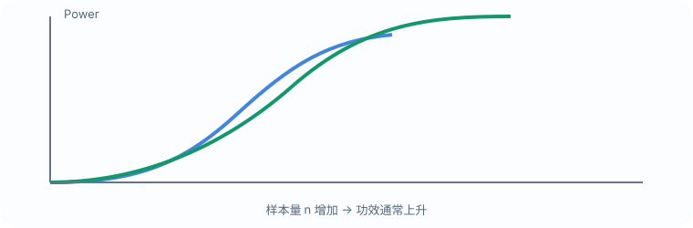

第12章：统计功效与样本量
大家好，我是你们的讲师。先问一个问题：如果你的新药真的有效，你做的实验有多大概率能检测到这个效果？这个概率就是统计功效（statistical power）。
本章学习目标
- Type I/II错误
- 功效分析
- 效应量

交互实验：样本量如何影响统计功效
用双样本均值差的正态近似演示样本量与功效的关系，结果仅作教学说明。
交互控件加载后，可调整参数并观察统计量的变化。
你可能觉得这是一个非常基础的问题——但实际上，大多数已发表研究的统计功效都远低于常规标准。著名的估计显示，许多生物医学研究的统计功效仅为20%-30%。这意味着如果这些研究中的效应真实存在，它们有70%-80%的概率错过这个发现。这是一个细思极恐的事情——浪费了大量的人力物力，只得到一个"无显著差异"的结论，而真实的效果就在那里，只是你没有足够的"火力"去检测到它。
12.1 Type I错误（α）与Type II错误（β）
在假设检验中，我们可能犯两种错误：
| 真实情况：H₀为真 | 真实情况：H₁为真 | |
|---|---|---|
| 我们拒绝H₀ | Type I错误（假阳性） 概率 = α | 正确！ |
| 我们无法拒绝H₀ | 正确！ | Type II错误（假阴性） 概率 = β |
- Type I错误（假阳性）：零假设为真，但我们错误地拒绝了它。通俗地说就是"谎报军情"——以为有效果，其实没有。α 就是犯这种错误的概率，通常设定为 0.05。
- Type II错误（假阴性）：备择假设为真，但我们没能拒绝零假设。通俗地说就是"错失良机"——其实有效果，但我们没检测到。β 就是犯这种错误的概率。
- 统计功效（Power）：Power = 1 - β，也就是当效果真实存在时，我们正确检测到它的概率。
12.2 统计功效（Power）= 1 - β
为什么 0.80 通常被认为是统计功效的"最低标准"？这个传统来自心理测量学和教育学领域的先驱 Jacob Cohen 他在1988年的经典著作中提出了这个建议。但这个标准同样应该根据具体情境调整：
- 如果错过一个真实效果的代价很高（如药物安全性检测），你应该追求 0.90 甚至 0.99 的统计功效。
- 如果是探索性的预研究，0.60-0.70 也可以接受。
12.3 效应量（Cohen's d等）
p值告诉你"有没有效果"，效应量（effect size）告诉你"效果有多大"。一个在超大样本中 p < 0.00001 的结果，效应量可能只有微不足道的 0.01——这意味着虽然"显著"，但实际意义很小。
常见的效应量指标：
- Cohen's d：两组均值差除以合并标准差。d = 0.2 为小效应，0.5 为中效应，0.8 为大效应。
- Pearson r：相关系数本身就是效应量。r = 0.1 为小效应，0.3 为中效应，0.5 为大效应。
- Cohen's f：用于ANOVA的效应量。
12.4 样本量计算：四个参数的关系
样本量计算是研究设计中最关键的一步。下面我们用 Python 的 statsmodels 来进行功效分析和样本量计算：
import numpy as np
from statsmodels.stats.power import TTestIndPower, TTestPower
# 初始化功效分析工具
analysis = TTestIndPower()
# == 场景1：已知效应量、样本量，求统计功效 ==
effect_size = 0.5 # Cohen's d = 0.5（中等效应）
n_per_group = 50 # 每组50人
alpha = 0.05
power = analysis.solve_power(
effect_size=effect_size,
nobs1=n_per_group,
alpha=alpha,
ratio=1.0, # 两组样本量比例
alternative='two-sided'
)
print(f"效应量 d={effect_size}, 每组n={n_per_group}")
print(f"统计功效: {power:.3f}")
# == 场景2：已知目标功效，求所需样本量 ==
target_power = 0.80
effect_size = 0.5
required_n = analysis.solve_power(
effect_size=effect_size,
power=target_power,
alpha=alpha,
ratio=1.0,
alternative='two-sided'
)
print(f"\n要达到 {target_power:.0%} 的统计功效")
print(f"需要每组样本量: {np.ceil(required_n):.0f}")
# == 场景3：不同效应量下所需的样本量对比 ==
for d in [0.2, 0.5, 0.8]:
n = analysis.solve_power(effect_size=d, power=0.80,
alpha=0.05, ratio=1.0)
print(f"d = {d:.1f}: 需要 n = {np.ceil(n):.0f} 人/组")运行这段代码你会发现：要检测小效应（d = 0.2）需要每组约 393 人；中等效应（d = 0.5）需要约 64 人；大效应（d = 0.8）只需要约 26 人。这就是为什么效应量对样本量要求的影响是巨大的。
12.5 为什么大多数研究的统计功效不足
更糟糕的是，很多研究者把"p > 0.05"等同于"没有效果"。但如果你的统计功效只有 20%，那么 80% 的"无显著差异"结果实际上都是假阴性——效果存在，你没看到而已。
为什么那么多研究的统计功效不足？几个原因：
- 经费限制：招募更多被试需要更多钱和时间。
- 效应量被高估：很多研究者用小规模预实验中的效应量来设计正式实验，但预实验中由于样本量小，效应量往往被高估（这被称为"胜利者的诅咒"）。
- 缺乏规划：很多人在收集数据前根本没做功效分析。
- 发表偏倚：只有"显著"的结果更容易发表，这反过来降低了对统计功效的重视。
统计功效分析让我们从"这个p值是多少"的狭隘视角中跳脱出来，开始问一些更本质的问题："我们的实验设计是否合理？我们有多大的把握能检测到真实效果？"这种思维转变，才是优秀分析师的标志。
下一章，我们将转向另一个重要的话题——相关分析。当你想了解两个变量之间是否有关系、关系有多强的时候，相关系数就是你最好的朋友。
本章小结
样本量应由最小有意义效应和研究代价驱动，而不是追求越大越好。